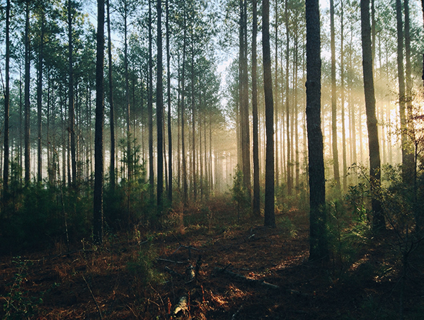

History of the BWCAW
Within it’s designated 1 million plus acres, the BWCAW contains over a thousand lakes and attracts visitors with its reputation for canoeing, canoe touring, fishing, backpacking, dog sledding, and remote wilderness character. The BWCAW has nearly 2,200 backcountry campsites and is one of Minnesota's top tourist attractions, drawing visitors from all over the United States as well as abroad.
The Boundary Waters area contains both the boreal forest (taiga) and a mixed conifer-hardwood forest known as the North Woods, which is a transition province between the northern boreal forest and deciduous forests to the south. The ranges of the plants and animals continue north into southern Canada and south into the rest of the upper Great Lakes region. Trees found within the wilderness area include conifers such as red pine, eastern white pine, jack pine, balsam fir, white spruce, black spruce, and white-cedar, as well as deciduous birch, aspen, ash, and maple. Blueberries are common in many parts of the BWCAW, as are raspberries. The BWCAW is estimated to contain some 400,000 acres (1,600 km2) of old growth forest, woods which may have burned but which have never been logged. Forest fires were a natural part of the Boundary Waters ecosystem before fire suppression efforts during the 20th century, with recurrence intervals of 30 – 300 years in most areas.
On July 4, 1999, a powerful wind storm, or derecho, swept across Minnesota and southern Canada, knocking down millions of trees and affecting about 370,000 acres (1,500 km2) within the BWCAW. This event became known officially as the Boundary Waters-Canadian Derecho, commonly referred to as "the Boundary Waters blowdown". Although campsites and portages were quickly cleared after the storm, an increased risk of wildfire continues to remain a concern due to the large number of downed trees. The U.S. Forest Service has undertaken a schedule of prescribed burns to reduce the forest fuel load in the event of a wildfire.